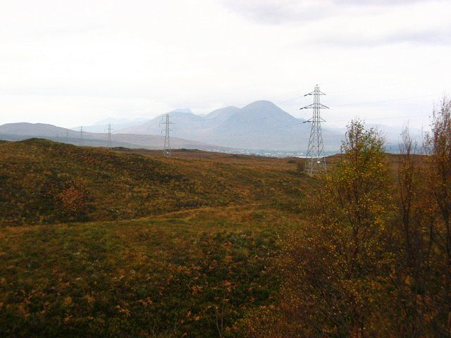

스코틀랜드 SSEN, 스카이 송전선 보강 지역에 546만 파운드 기금…신청은 내년 2월 10일까지

첫해 최대 180만 파운드, 신청 1건당 최대 10만 파운드…주택·공동체 자산 등 5개 분야 우선 심사
스코틀랜드 송전회사 SSEN Transmission은 스카이 송전선 보강 사업을 받아들이는 지역 공동체를 위해 총 546만 파운드 규모의 기금을 열었다고 밝혔다. 첫해에는 최대 180만 파운드를 내줄 수 있고, 신청 1건당 최대 10만 파운드까지 받을 수 있다. 대상은 스카이·라세이, 글레넬그·아르니스데일, 글렌개리, 포트오거스터스·글렌모리스턴 공동체의회 구역이며, 다른 지역 단체도 이 구역 주민에게 이익이 됨을 보이면 신청할 수 있다. 회사는 지역 협의를 거쳐 주택, 공동체 자산, 공동체 역량, 지역 편의시설, 교통·연결성의 5개 분야를 심사 우선순위로 정했으며 청소년과 게일어 관련 사업을 환영한다고 밝혔다. 기금은 회사가 운영하고, 신청은 2026년 11월 4일에 시작해 2027년 2월 10일 마감한다.
시민에너지 관점
송전망을 받아들이는 지역에 546만 파운드를 따로 두고 신청 1건당 상한을 10만 파운드로 정한 것은, 지역 보상의 규모와 심사 틀을 숫자로 먼저 내놓은 해외 사례다. 기금을 회사가 운영하면 지역이 쓰임새를 정할 수 없다는 우려가 나올 수 있는데, 이 기금은 우선 분야를 지역 협의로 정하고 사용처는 주민 단체의 신청에 맡긴 구조다. 다만 일회성 보상금이 아니라 공동체 자산 같은 지역 소유 자산으로 쌓일 때 보상은 지역의 힘이 되므로, 운영과 심사에도 주민이 직접 참여하는 구조가 답이다. 우리도 송전선과 발전단지의 지역 환원 기금을 만든다면 금액과 심사 기준을 사전에 공개하고 주민 참여를 넣어야 한다.
출처: SSEN Transmission(보도자료) 2026-11-03 기자명 없음 원문 보기
창간 전 시험 발행 기사입니다.
スコットランドSSEN、スカイ送電線増強地域に546万ポンドの基金…申請は来年2月10日まで
初年度は最大180万ポンド、申請1件当たり最大10万ポンド…住宅・コミュニティ資産など5分野を優先審査
スコットランドの送電会社SSEN Transmissionは、スカイ増強事業を受け入れる地域コミュニティのために、総額546万ポンドの基金を開いたと発表した。初年度は最大180万ポンドを交付でき、申請1件当たり最大10万ポンドまで受け取れる。対象はスカイ・ラセイ、グレネルグ・アーニスデール、グレンガリー、フォートオーガスタス・グレンモリストンのコミュニティ議会区域で、ほかの地域団体もこの区域の住民に利益があることを示せば申請できる。同社は、地域との協議を経て、住宅、コミュニティ資産、コミュニティの力量、地域の公共施設、交通・接続の5分野を審査の優先順位に定め、青少年やゲール語に関する事業を歓迎すると述べた。基金は同社が運営し、申請は2026年11月4日に始まり、2027年2月10日に締め切られる。
市民エネルギーの視点
送電網を受け入れる地域に546万ポンドを別枠で置き、申請1件当たりの上限を10万ポンドと定めたのは、地域への還元の規模と審査の枠組みを数字で先に示した海外の事例だ。基金を会社が運営すれば地域は使い道を決められないという懸念も出うるが、この基金は優先分野を地域協議で決め、使い道を住民団体の申請に委ねる仕組みである。ただし、一回限りの補償金ではなく、コミュニティ資産のような地域所有の資産として積み上がってこそ補償は地域の力になるため、運営と審査にも住民が直接参加する仕組みが答えだ。韓国でも送電線や発電団地の地域還元基金をつくるなら、金額と審査基準を事前に公開し、住民参加を盛り込むべきだ。
出典: SSEN Transmission(보도자료) 2026-11-03 No byline 原文を読む
創刊前の試験発行記事です。
苏格兰SSEN为斯凯岛输电线路加强项目所在社区设立546万英镑基金…申请截至明年2月10日
首年最高180万英镑，单项申请最高10万英镑…优先审查住房、社区资产等5个领域
苏格兰输电公司SSEN Transmission宣布，为接纳斯凯岛（Skye）输电线路加强项目的当地社区设立总额546万英镑的基金。首年最高可发放180万英镑，单项申请最高可获10万英镑。资助对象为斯凯和拉塞（Raasay）、格伦内尔格和阿尼斯代尔、格伦加里、奥古斯都堡和格伦莫里斯顿等社区理事会辖区，其他地区团体只要证明对这些辖区居民有益，也可申请。公司表示，经与当地协商，已将住房、社区资产、社区能力、地方设施、交通与联通5个领域定为评审优先事项，并欢迎青少年和盖尔语相关项目。基金由公司运营，申请于2026年11月4日开始，2027年2月10日截止。
市民能源视角
为接纳输电网络的地区另设546万英镑，并把单项申请上限定为10万英镑，是用数字先行公布地方补偿规模和评审框架的海外案例。有人可能担心基金由公司运营，地方无法决定用途，但这项基金的优先领域经地方协商确定，用途交由居民团体申请。不过，补偿若不是一次性发放的资金，而是沉淀为社区资产这类地方所有的资产，才能成为地方的力量，因此运营和评审也需要居民直接参与。韩国若为输电线路和发电园区设立地方回馈基金，也应事先公开金额和评审标准，并纳入居民参与。
来源: SSEN Transmission(보도자료) 2026-11-03 기자명 없음 查看原文
本文为创刊前试发行文章。
Scotland's SSEN opens 5.46 million pound fund for communities hosting Skye reinforcement; applications close Feb. 10
Up to 1.8 million pounds in the first year and up to 100,000 pounds per application; five priority areas including housing and community assets
Scottish transmission company SSEN Transmission said it has opened a community benefit fund totaling 5.46 million pounds for communities hosting its Skye Reinforcement Project. Up to 1.8 million pounds can be awarded in the first year, with a maximum of 100,000 pounds per application. The fund covers the community council areas of Skye and Raasay, Glenelg and Arnisdale, Glengarry, and Fort Augustus and Glenmoriston, and groups from elsewhere can also apply if they show a benefit to residents of those areas. The company said that, after consulting locally, it set five priority areas for assessment: housing, community assets, community capacity, local amenities, and transport and connectivity, and that it welcomes youth and Gaelic projects. SSEN Transmission will run the fund; applications opened on Nov. 4, 2026, and close on Feb. 10, 2027.
Citizen Energy View
Setting aside 5.46 million pounds for communities that host a grid line, with a 100,000 pound cap per application, is an overseas example of putting the size and assessment framework of local compensation on the table in numbers up front. There may be a worry that a company-run fund leaves communities no say in how money is used, yet here the priority areas were set through local consultation and the spending is left to applications from local groups. Even so, compensation becomes local strength when it builds up as locally owned assets such as community property rather than one-off payments, so residents should take a direct part in running and assessing the fund. If Korea creates regional return funds for transmission lines and power complexes, it should publish the amount and the assessment criteria in advance and build in resident participation.
Source: SSEN Transmission(보도자료) 2026-11-03 No byline Read the original
This article was published during the trial period before launch.